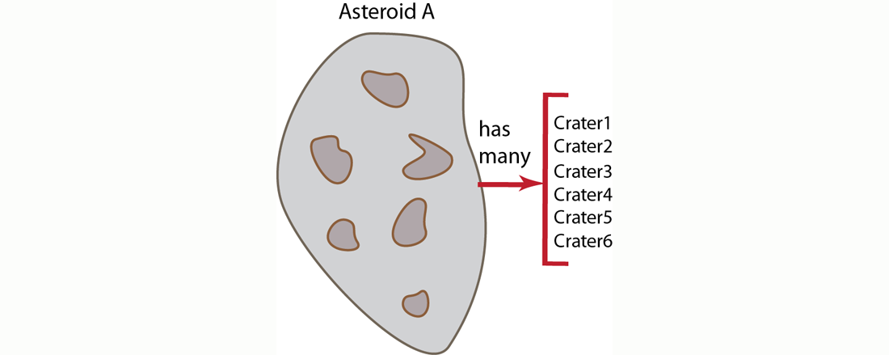
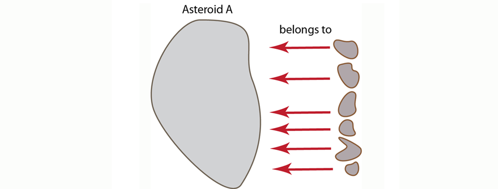

Modeling documents for retrieval
Once you grasp the concept that you can model real-world objects as documents and you understand the idea that you can create relationships between documents, you may wonder how should you go about representing the relationships? For instance, if you have an object that has a relationship of ownership/possession, do you always want to include fields in that object which reference all the objects it owns? In other words, if you follow this approach, when an asteroid has craters, the asteroid document should contain references to each crater document. In traditional relational database terminology, this is called a one-to-many relationship, and is often also called a has-many relationship. In an asteroid example we say the “asteroid has many craters” and conceptually it would appear as follows:
Imagine we are creating a virtual universe containing asteroids. And all asteroids can have zero or more craters; users in the environment can create more craters on the asteroids, and the environment can also create more craters on an asteroid. In this case, we have a relationship of ownership/possession by our asteroid since an asteroid contains the craters that are on it. If we choose to express ownership of the craters by the asteroid and say the asteroid has-many craters, we would provide an asteroid document as follows:
{
"a_id" : "asteroidA",
"craters" : ["crater1", "crater2" .... ],
....
}
In the asteroid document, we reference the crater by crater ID in an array of craters. Each of the craters could be represented by the following JSON document:
{
"crater_id" : "crater1",
"location" : [ "37.42N", "-112.165W" ],
"depth" : 80
....
}
But because we are working with a flexible, document-centric design, we could instead put all the references to the object-that-owns in the objects that are owned. In the asteroid example, we would have references from each crater document to the asteroid document. In the relational world, we refer to this as a many-to-one relationship which is sometimes also called a belongs-to relationship. This alternate approach would appear as follows:
The respective asteroid and crater JSON documents for this approach would now appear as follows:
{
"a_id" : "asteroidA",
....
}
In the asteroid document we have a unique asteroid ID field, a_id which we can reference from our crater documents. Each of the craters could be represented by the following JSON document:
{
"crater_id" : "crater1",
"on_asteroid" : "asteroidA"
"location" : [ "37.42N", "-112.165W" ],
"depth" : 80
....
}
With this alternate approach, we provide any information about a relationship between asteroid and crater in each crater document. We provide a field on_asteroid in each crater document with the value linking us to the asteroid document.
So which of these two approaches is preferable for relating the two documents? There are two important considerations to keep in mind when you relate documents:
- Issues of Contention : if you expect a lot of updates from different processes to occur to a document, creating several belongs-to relationships is more desirable.
In the case of our asteroid example, if we have all craters referenced in the asteroid document, we can expect a good amount of conflict and contention over the asteroid document. As users create more craters, or as the environment creates more craters, we can expect conflicts between the processes that are all trying to update crater information on a single asteroid document. We could use locks and compare and swap operations to prevent conflict, but this would diminish read/write response time. So in this type of scenario, putting the link from craters to asteroid makes more sense to avoid contention.
- Retrieving Information: how you relate documents or how you provide references between documents will influence the way you should retrieve data at a later point. Similarly, how you want to retrieve information will influence your decision on how to model your documents.
In this asteroid model, since we choose to reference from craters to asteroid to avoid contention, we need to use indexing and querying to find all craters associated with an asteroid. If we had chosen the first approach where the asteroid contains references to all craters, we could perform a multiple-retrieve with the list of craters to get the actual crater documents.
If we did not have this concern about contention in our asteroid example, it would be preferable to use the has-many approach, where one document has references to multiple documents. This is because performing a multiple-retrieve on a list of documents is always faster than getting the same set of documents through indexing and querying. Therefore, as long as there is less concern about contention, we should use the has-many model as the preferred approach. The advantages of this approach apply to all cases where our object is relatively static. For example, if you have a player document and you do not expect to change the player profile object that often you could store references to player abilities in the player document and describe the abilities in separate documents.
For more information about retrieving information using a multiple retrieve, or by using indexing and querying, see Retrieving multiple keys and Finding data with views.